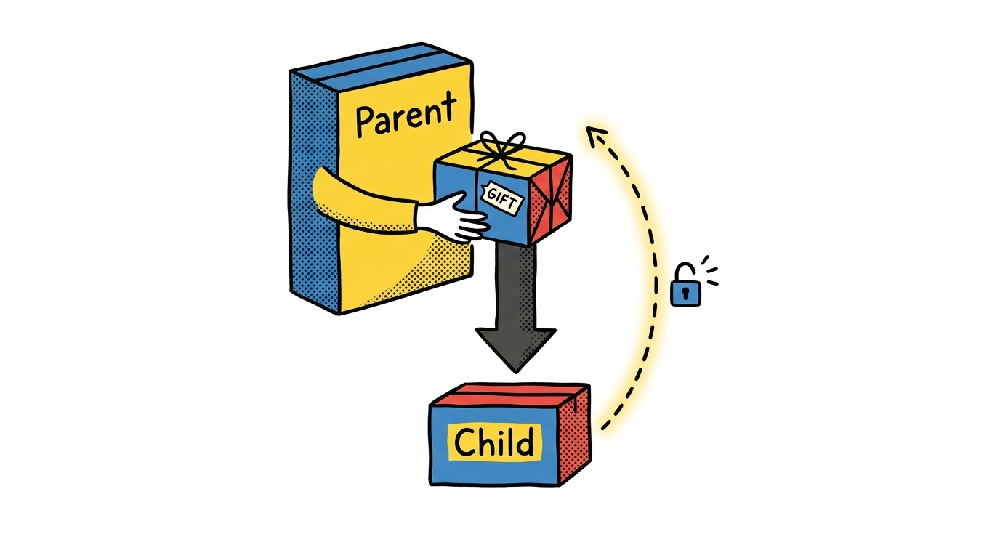

Chapter 04 · Component Inputs
$props & $bindable
One rune replaces export let,
$$props, and $$restProps at once. Destructure it like any
other object, right down to defaults, renames, and a rest pattern.
// Card.svelte
let { title, tone = 'neutral', ...rest } = $props();<Card title="Ready" tone="good" />Destructuring reads exactly like a function's parameter list, because that's what it
is now — title is required in spirit, tone falls back to
'neutral' when the caller omits it, and rest mops up anything
else (handy for spreading extra attributes onto a root element).
| Need | Syntax |
|---|---|
| Default value | let { adjective = 'happy' } = $props(); |
| Rename (reserved word, etc.) | let { super: trouper } = $props(); |
| Rest props | let { a, b, ...others } = $props(); |
| TypeScript | let { title }: { title: string } = $props(); |
| Stable unique id | const uid = $props.id(); |
Data flows down — until you say otherwise
Props are one-way by default: the parent's value can reassign the child's local copy,
but writing to a plain prop inside the child does nothing to the parent. Mark a prop
$bindable to open a two-way channel, then let the parent opt in with
bind:.
// Keypad.svelte
let { value = $bindable('') } = $props();<!-- Parent.svelte -->
<Keypad bind:value={pin} />
A bold, playful editorial zine illustration: a tall "Parent" box handing a labeled gift-wrapped parcel down a one-way arrow to a shorter "Child" box below it — clean flat vector style, hand-inked outlines. Beside it, a second thin dashed arrow loops back up from the child box to the parent box, glowing, labeled with a small padlock-unlocked icon to suggest an opt-in two-way channel. Strict palette of yellow, blue, red and charcoal gray only on white, halftone dot shading, generous whitespace, no text baked in. Target ~1280x720px, 16:9 landscape; compose for a small on-page figure with the subject centred and safe margins — it is letterboxed into a 16:9 box, so keep nothing important near the edges.
Generate with your image agent, then drop the file here.
Bindable ≠ mandatory bind:
Declaring a prop $bindable means the parent may use
bind:, not that it must. Callers who just want to pass a value can still write
<Keypad value={pin} /> — one-way, no surprises. Reach for
$bindable sparingly: every bindable prop is a spot where data can flow up, which
makes the component harder to reason about from the outside. Form controls and a handful of "controlled
widget" components are the honest use cases — not a default you reach for everywhere.
Mutating a prop you don't own
If a prop arrives as a $state proxy from the parent and you
mutate it directly without $bindable, Svelte warns
(ownership_invalid_mutation) — it still "works" today because it's the same proxy, but
it's flagged because the parent has no idea its data changed. Treat props as read-only unless the prop is
explicitly bindable.
Try it
Build a Toggle.svelte with let { on = $bindable(false) } = $props()
and a button that flips on. Use it twice: once as
<Toggle bind:on={dark} />, once as plain <Toggle on={true} />
with no bind:. Notice the second one still renders — it just can't report back.
I still default every prop to one-way. Two-way binding is a feature you add when a component earns it — not a starting posture.